🎭Farsang 2026🎭
⏱️Mikor van farsang 2026-ban?⏱️
A farsang a télbúcsúztatás és a tavaszvárás időszaka, melynek kezdete minden évben január 6-án, Vízkereszt napján van. A farsangi időszak vége azonban változó, mivel a húsvét mozgó ünnep, és ehhez igazodik a farsang zárása is.
2026-ban a farsang időszaka:
Január 6-tól február 17-ig tart
Mit jelent a farsang?
A farsang a tél utolsó napjaitól húshagyókeddig tartó időszak, amelyet vidám lakodalmak, bálok, mulatságok és népünnepélyek jellemeznek. Hagyományosan a bővelkedés, az étkezés és a szórakozás időszaka, mielőtt a nagyböjt megkezdődne.
🎪A farsangi időszak szokásai🎪
Vidám lakodalmak, bálok
Farsang alatt számtalan bált és mulatságot rendeznek, ahol az emberek táncolnak és énekelnek.
🏰Karnevál🏰
A Velencei karnevál a legismertebb, de hazánkban is számos városban rendeznek karnevált.

👺Mohácsi busójárás👺
Magyarországon a farsang legnevezetesebb eseménye, amelyet az UNESCO is a világörökség részének nyilvánított.
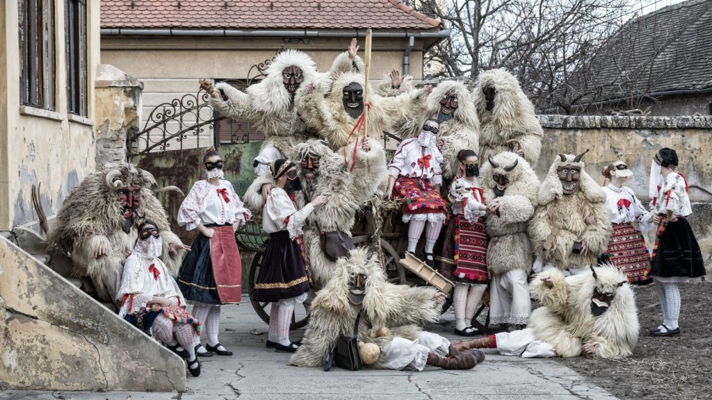🎭Jelmezes felvonulások🎭
Farsang idején gyakoriak a jelmezes felvonulások és rendezvények, ahol mindenki álcázva vesz részt.
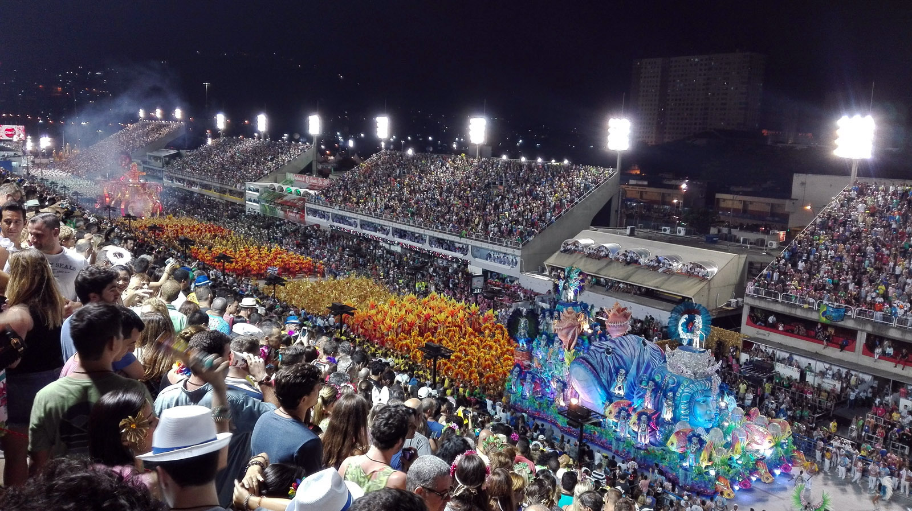Farsangi ételek
🍩Fánk🍩
A farsangi időszak egyik legnépszerűbb édessége, amelyet különféle töltelékekkel és szórásokkal készítenek.

🍖Borjú, marhasült🍖
Hagyományosan a húsételek is fontos szerepet kapnak a farsangi időszakban, különösen a borjú- és marhasült.
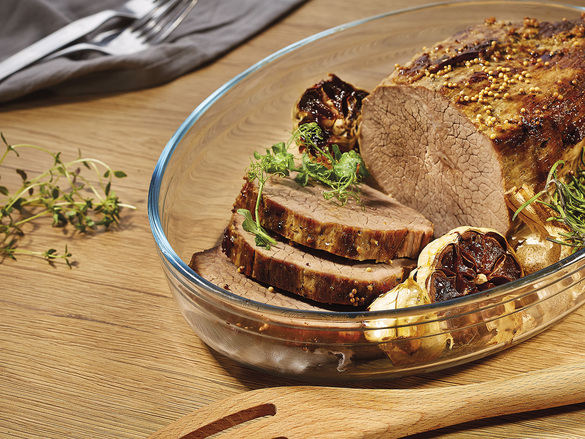Gulyásleves
Ez a gazdag, fűszeres leves gyakran szerepel a farsangi menükön.

👗Farsangi jelmezek👗
A farsangi időszakban az emberek különféle jelmezekbe öltöznek, hogy elrejtsék valódi személyazonosságukat és részt vegyenek a mulatságokban. Néhány népszerű jelmez:
- Szuperhősök (pl. Superman, Batman)
- Állatok (pl. oroszlán, tigris)
- Mesefigurák (pl. hercegnők, kalózok)
- Horror karakterek (pl. vámpírok, zombik)
- Hagyományos népi jelmezek (pl. busó, maskara)
 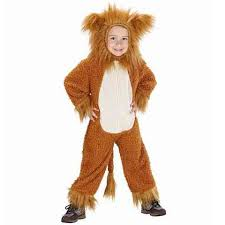
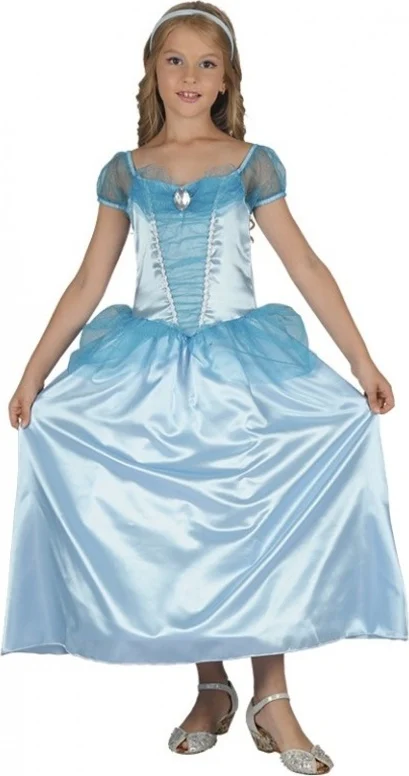
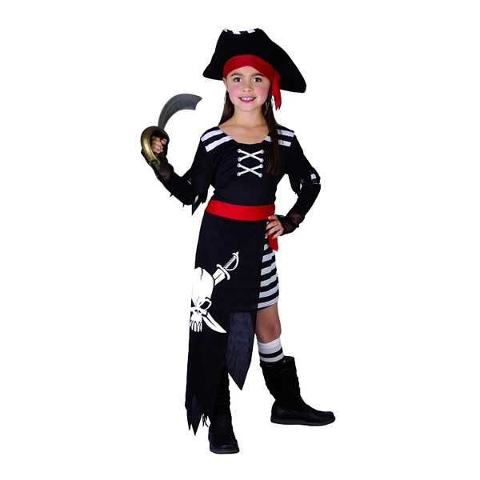
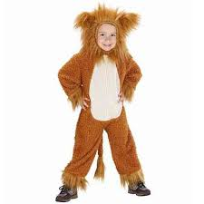
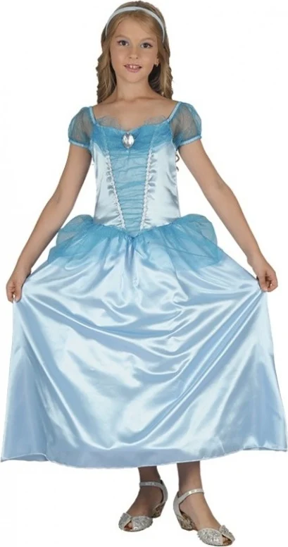
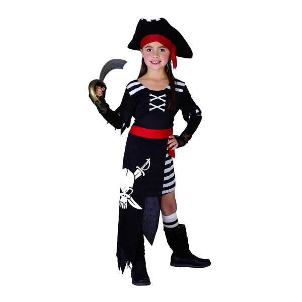


Kattintson hosszan a képekre a nagyításhoz
🖼️Képgaléria🖼️
 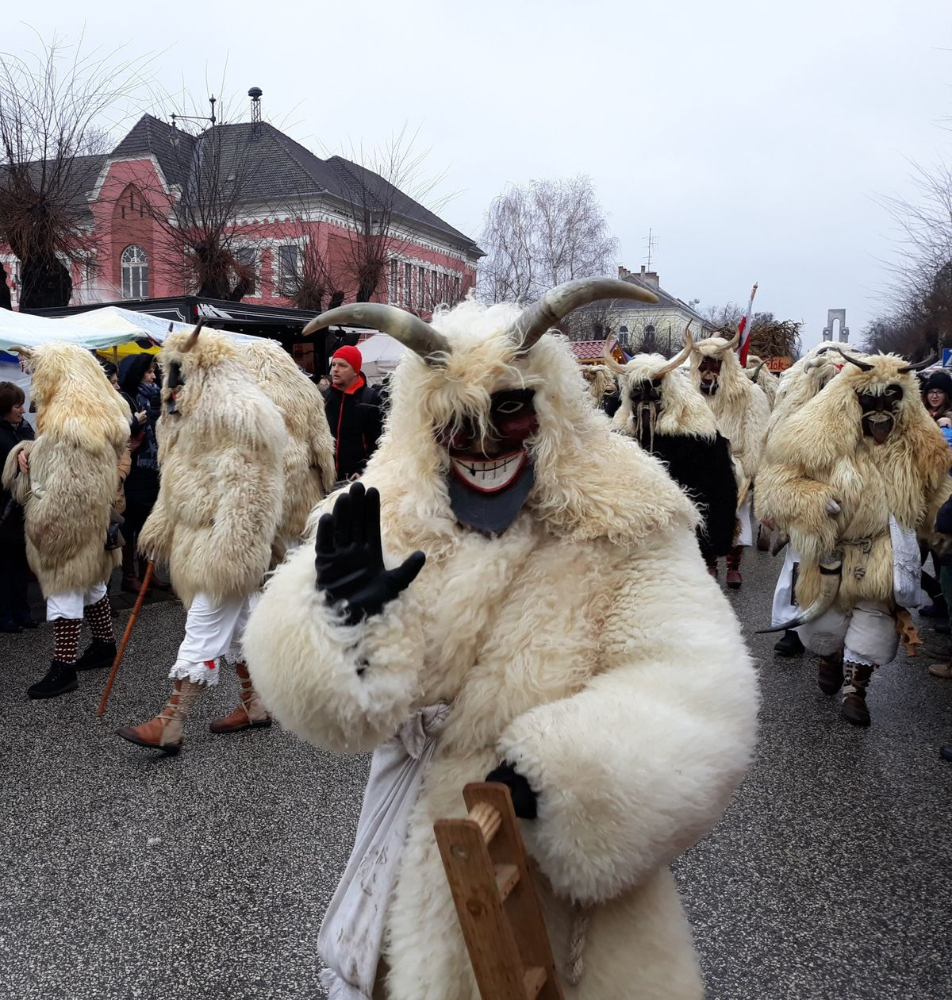
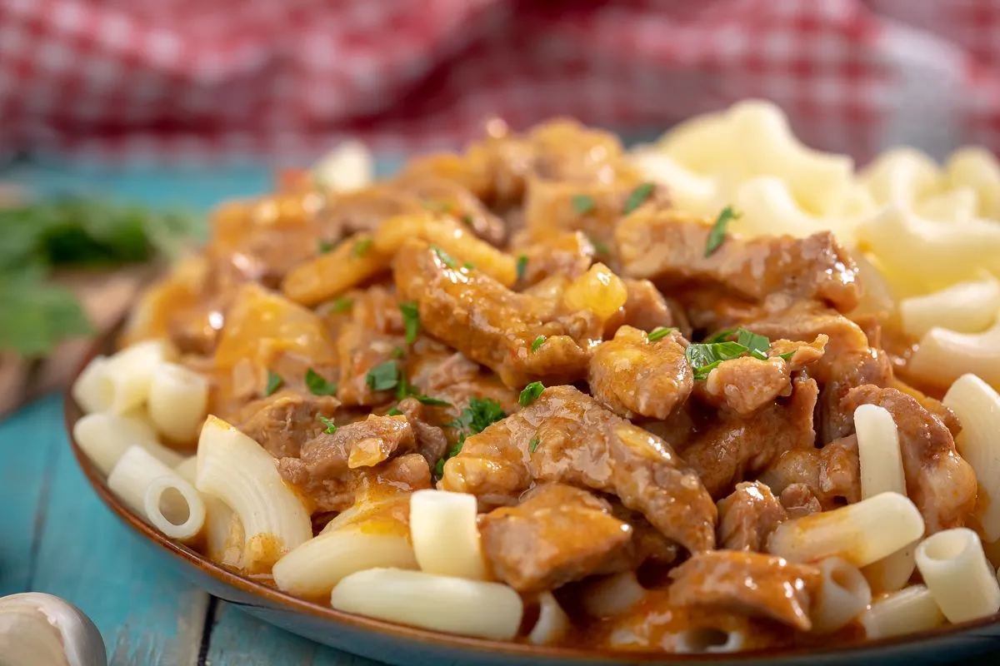
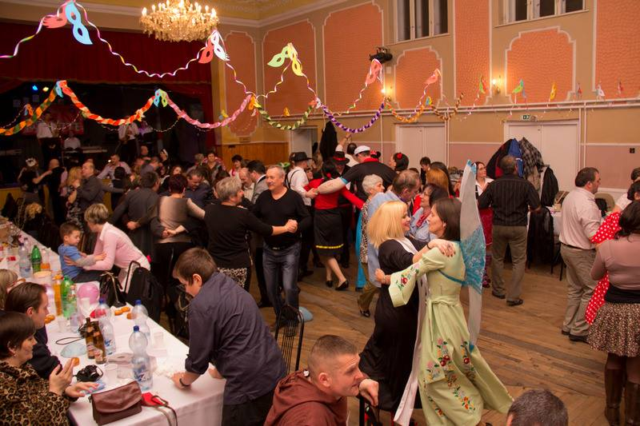
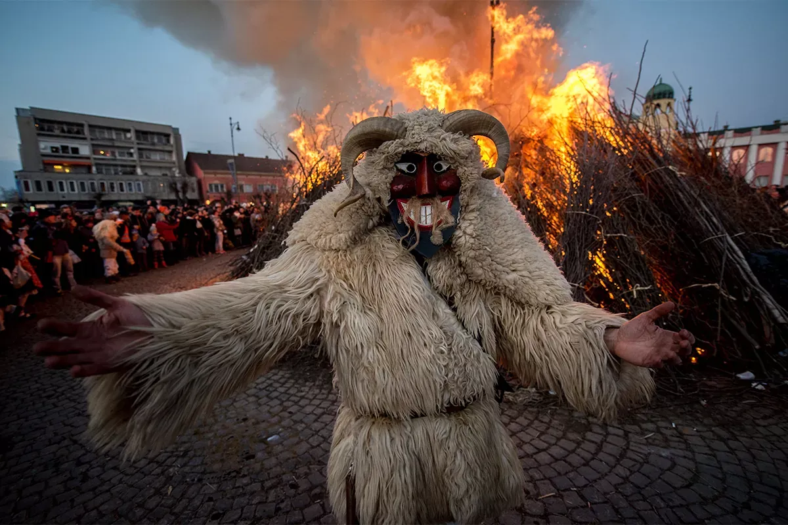
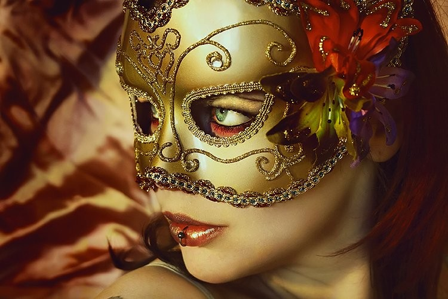
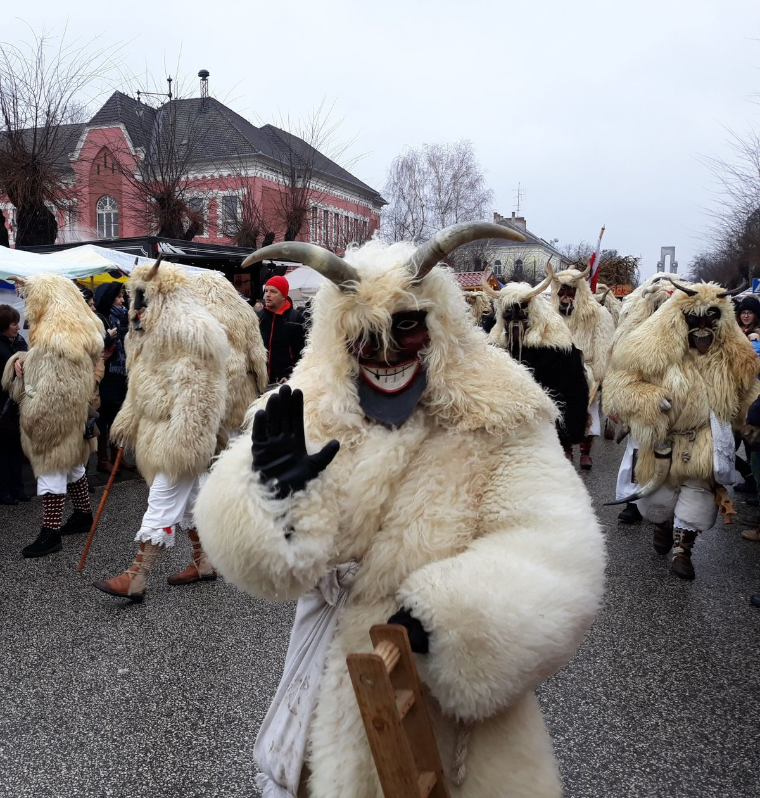
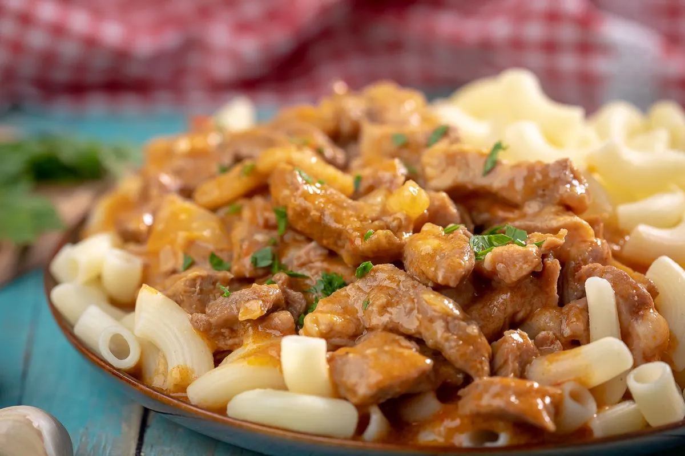
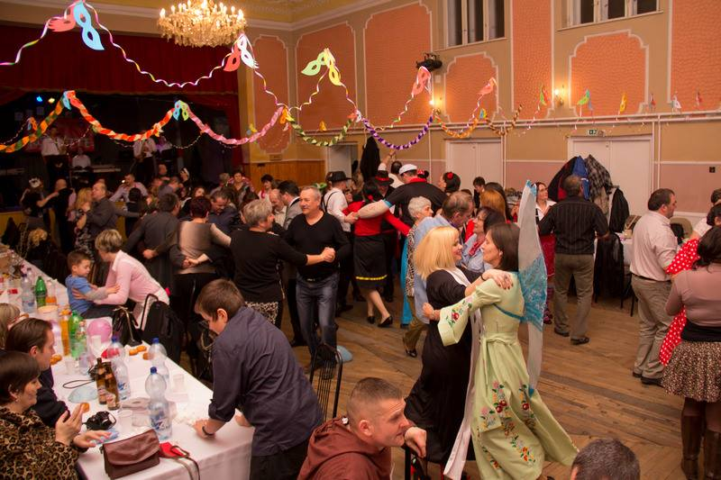
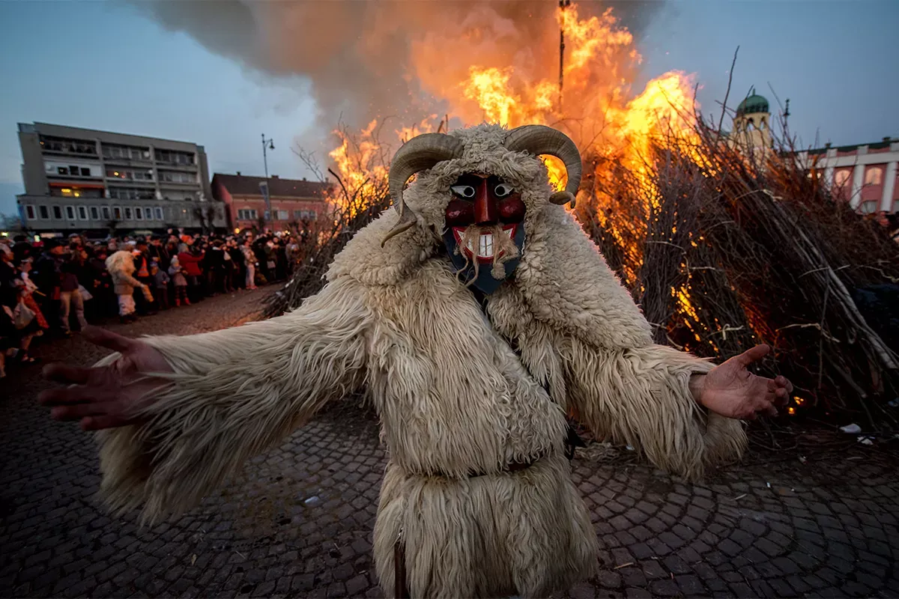
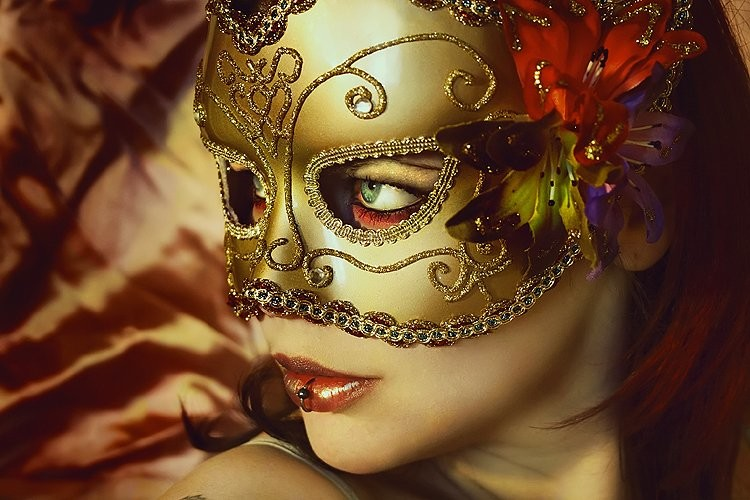
Kattintson hosszan a képekre a nagyításhoz